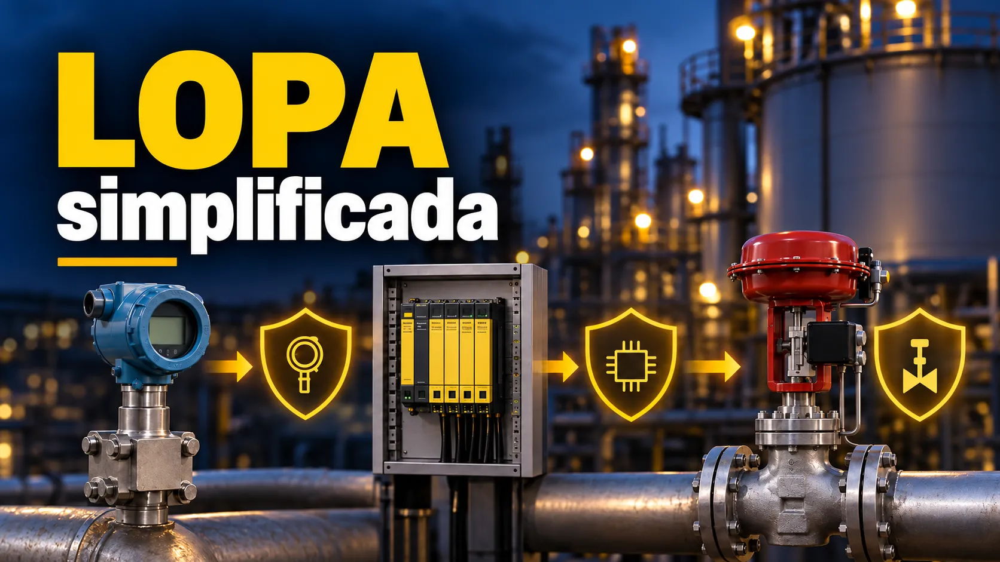

LOPA: cenário, evento iniciador, IPL e PFD
Conteúdo técnico: ALOGY Engenharia · Revisado em: 16/09/2026

A análise por camadas de proteção, ou LOPA (Layer of Protection Analysis), é usada para examinar um cenário de acidente de forma mais estruturada do que uma avaliação apenas qualitativa, sem chegar ao nível de uma análise quantitativa completa de risco. O CCPS descreve a LOPA como uma abordagem de ordem de grandeza, aplicada a um cenário específico, que combina frequência do evento iniciador, desempenho das camadas de proteção e critério de risco da organização.
O objetivo não é produzir um número isolado. O valor da LOPA está em tornar explícito por que determinado cenário é considerado suficientemente protegido ou por que precisa de redução de risco adicional. Para isso, cada crédito precisa ter uma origem, uma justificativa e uma fronteira clara.
1. Comece pelo cenário, não pela multiplicação
Uma LOPA deve começar com um cenário que possa ser explicado sem ambiguidade. Em termos práticos, isso significa separar:
- causa ou evento iniciador: o que dispara a sequência;
- consequência: o resultado indesejado que está sendo analisado;
- condições habilitadoras ou modificadores condicionais: quando o método adotado permitir e houver base para utilizá-los;
- camadas independentes de proteção: funções que reduzem a probabilidade de a sequência chegar à consequência;
- critério de risco: referência usada pela organização para julgar se a redução obtida é suficiente.
Se duas causas diferentes forem agrupadas sem critério, ou se a consequência mudar no meio da análise, a conta pode continuar matematicamente correta e ainda assim deixar de representar um cenário coerente.
2. Frequência do evento iniciador
A frequência iniciadora representa a recorrência esperada da causa antes de aplicar o crédito das camadas de proteção. Ela deve ser acompanhada de unidade e origem. Usar “0,1” sem registrar se significa 0,1 por ano, por operação, por demanda ou por campanha torna o resultado impossível de auditar.
Fontes podem incluir dados corporativos, experiência operacional tratada de forma estatisticamente defensável, bases reconhecidas ou valores previstos no procedimento interno. O ponto essencial é evitar misturar bases incompatíveis.
3. Quando uma salvaguarda pode receber crédito como IPL
Uma salvaguarda não vira IPL apenas porque aparece no P&ID ou porque “sempre funcionou”. O crédito depende do método utilizado e, de forma geral, exige demonstrar que a camada é aplicável ao cenário, suficientemente independente, confiável para o crédito atribuído e gerenciável ao longo do ciclo de vida.
| Pergunta | O que precisa ficar claro | Sinal de alerta |
|---|---|---|
| É aplicável? | A camada atua antes da consequência analisada e responde ao cenário em questão. | Crédito dado a um dispositivo que não detecta ou não interrompe a sequência analisada. |
| É independente? | A falha do evento iniciador ou de outra camada não elimina simultaneamente essa proteção. | Mesmo sensor, energia, lógica ou elemento final usado em duas camadas creditadas sem análise de dependência. |
| O desempenho é justificável? | O PFD ou fator de redução tem fonte, premissas e condições de manutenção/teste documentadas. | Valor copiado de tabela genérica sem relação com a instalação. |
| É mantida ao longo do tempo? | Há teste, inspeção, tratamento de bypass, gestão de mudança e registros compatíveis com o crédito. | Camada que recebe crédito no estudo mas não possui rotina capaz de sustentar o desempenho assumido. |
4. Exemplo didático de frequência mitigada
Considere, apenas para ilustrar a mecânica da conta, um evento iniciador com frequência de 0,1 por ano e duas IPLs independentes, cada uma com PFD de 0,1. Desconsiderando deliberadamente condições habilitadoras e modificadores condicionais, a frequência mitigada seria:
Frequência mitigada = 0,1/ano × 0,1 × 0,1 = 0,001/anoEsse resultado representa a matemática do exemplo, não a aprovação do cenário. Ainda seria necessário verificar se as duas camadas podem de fato receber crédito, se os PFDs são sustentáveis na instalação e se 0,001/ano atende ao critério de risco aplicável à consequência estudada.
5. O que uma LOPA precisa documentar
| Elemento | Registro mínimo útil |
|---|---|
| Cenário | Causa, sequência, consequência e fronteira da análise. |
| Evento iniciador | Frequência, unidade, fonte e justificativa. |
| Condições/modificadores | Quando aplicados, base técnica e regra do método que permite o uso. |
| IPL | Função, independência, PFD/crédito, fonte do valor e premissas de teste/manutenção. |
| Resultado | Frequência mitigada e comparação com o critério de risco correspondente à consequência. |
| Ações | Medidas adicionais, responsáveis, prazos e forma de verificar a conclusão. |
6. Erros que podem produzir uma falsa sensação de redução de risco
- creditar duas vezes a mesma função de proteção;
- tratar alarme, BPCS, SIS e resposta humana como independentes sem avaliar dependências;
- usar PFD sem relacioná-lo a teste, manutenção e arquitetura reais;
- aplicar frequência iniciadora de uma fonte sem conferir unidade e contexto;
- somar ou multiplicar cenários diferentes apenas para chegar a um número final;
- comparar a frequência calculada com um critério de risco de outra categoria de consequência;
- usar a LOPA como substituta de uma análise de perigos que ainda não definiu o cenário.
7. Relação entre LOPA, SIL e função instrumentada de segurança
Quando a redução de risco necessária leva à especificação de uma função instrumentada de segurança, a LOPA pode contribuir para definir a redução requerida. A partir daí, o trabalho entra no ciclo de vida de segurança funcional: requisitos da função, arquitetura, dados de falha, verificação, validação, operação, teste de prova e gestão de mudanças.
É por isso que o resultado da LOPA não substitui a verificação do SIL. Um estudo responde quanto risco precisa ser reduzido no cenário; a engenharia de segurança funcional demonstra se a função projetada e mantida consegue cumprir o requisito.
Referências técnicas
- CCPS/AIChE — Guidelines for Initiating Events and Independent Protection Layers in LOPA.
- CCPS/AIChE — Guidelines for Enabling Conditions and Conditional Modifiers in LOPA.
- IEC 61511-1:2016+A1:2017 — Safety instrumented systems for the process industry sector.